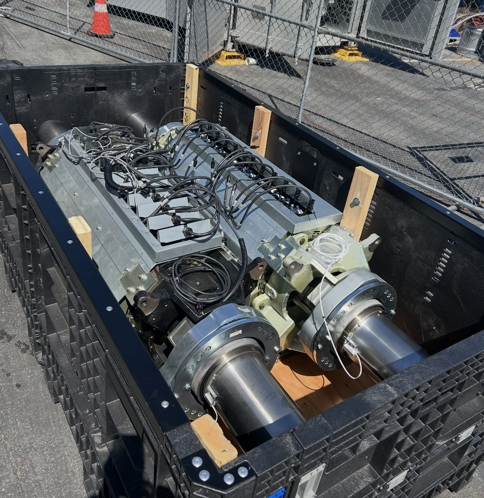
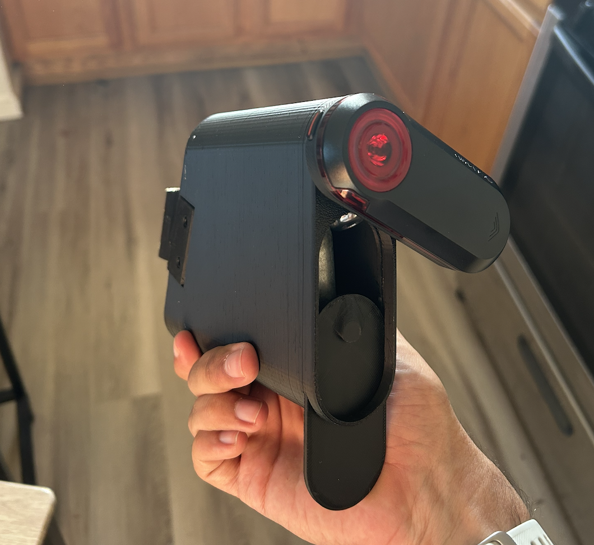

Projects
← Back
Electric Vehicle Body CFD Optimization
CFD-driven vehicle body optimization focused on reducing drag through rear-body streamlining and wake control.
2026

Bicycle Frame Analysis
Step-through e-bike frame redesign optimized through finite element analysis and parametric studies.
2026

EverSeat Modular System
A single child seat system replacing multiple stages.
2025

Production Tooling for Stator Coil Bonding
Designed a pneumatic fixture to pierce insulation and activate bond coat through electrical conduction, improving repeatability in production.
2025

Shipping Crate Qualification Testing
Developed and executed test methods to evaluate shipping crate durability under realistic transport conditions.
2025

Wind Tunnel Blade Optimization
MATLAB-based turbine blade design validated through wind tunnel testing.
2025

Aerodynamic Saddle Bag Design
Designed a lightweight, aerodynamic saddle bag to reduce drag and eliminate traditional strap-based mounting.
2025